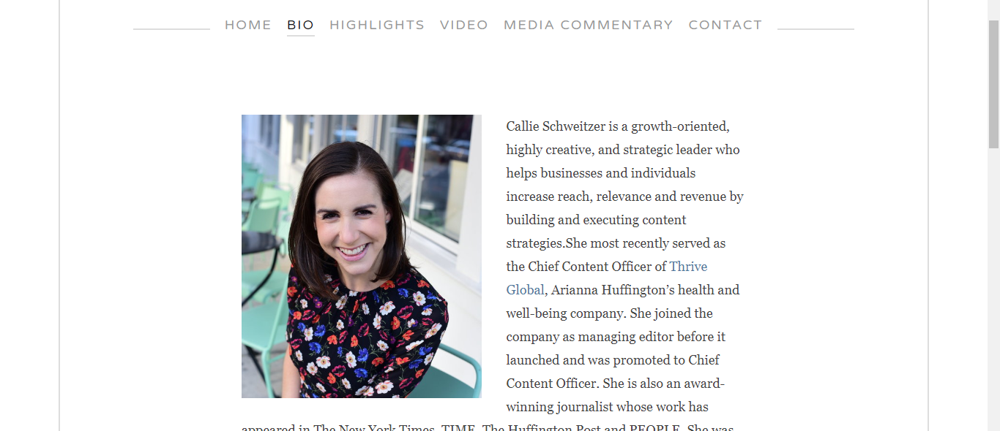
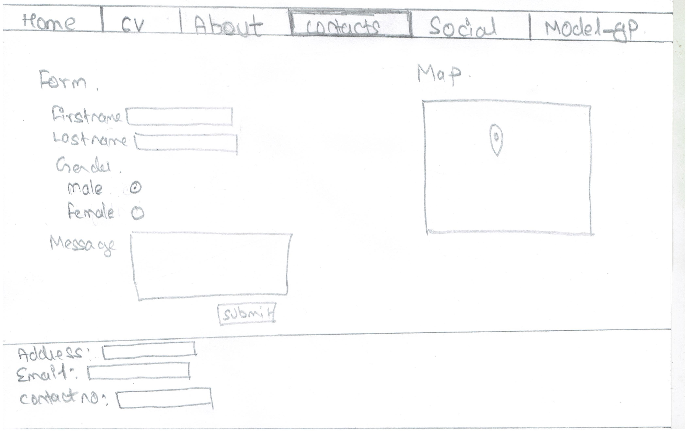

Introduction
This is the Report part of the assignment of Web development (CSY 1018) the task of this assignment was to design 'Web Development CV' i.e a curriculum vitae of yourself into the website by using HTML and CSS.That was taught in our Web development lectures. There are 6 webpages that we need to make to complete this assignment it includes your Homepage(landing page),about where you put short biography about yourself , cv where you put your qualifications and skills,social where all social media links are kept and a contact page where people can contact you and also see your location on the google map. You can access my website through https://rahulkhatiwada1.github.io .
I gained some knowledge from theses website https://www.devonstank.com and http://www.callieschweitzer.com/ for my website design. I found those websites very good and amazing.We worked in a group to make our work more easier. We conducted some sessions where we researched various similar type of website and gave our own views and ideas.For designing the websites first of i looked at some sample websites and gain some ideas after getting all the ideas required i started making designs and wireframes for each of the websites to be made.Then afterwards i did some research and started coding. Coding the website took some time, despite all the difficulties i finally made my own website.

Experience of first Term
My experience in first term of web development was good. I had fun learning new things which i didn't knew before. Although it was hard for me I still tried to giving my best and i am satisfied with myself.The teachers were helpful and they taught us very good.Talking about the syllabus they were very much advanced than the knowledge i had before studying this module.The syllabus is very preciesly designed that will help us understand about web development step by step until we become a professional.
Designs
I made some designs(Wire frames) before making my website they are.The wireframes are as below
The wireframe of my Home page
The wireframe of my CV page
The wireframe of my About page
The wireframe of my Contact page

The wireframe of my Social page
Conclusion
The overall project was quite hard but despite that i made my own website and HTML and CSS which was fun to do. This project taught me the importance of group work and how fun coding Is.
Reference
alphacoders. 2011. Park Full HD Wallpaper and Background Image. [ONLINE] Available at: https://wall.alphacoders.com/big.php?i=102727. [Accessed 12 April 2018].
https://www.devonstank.com